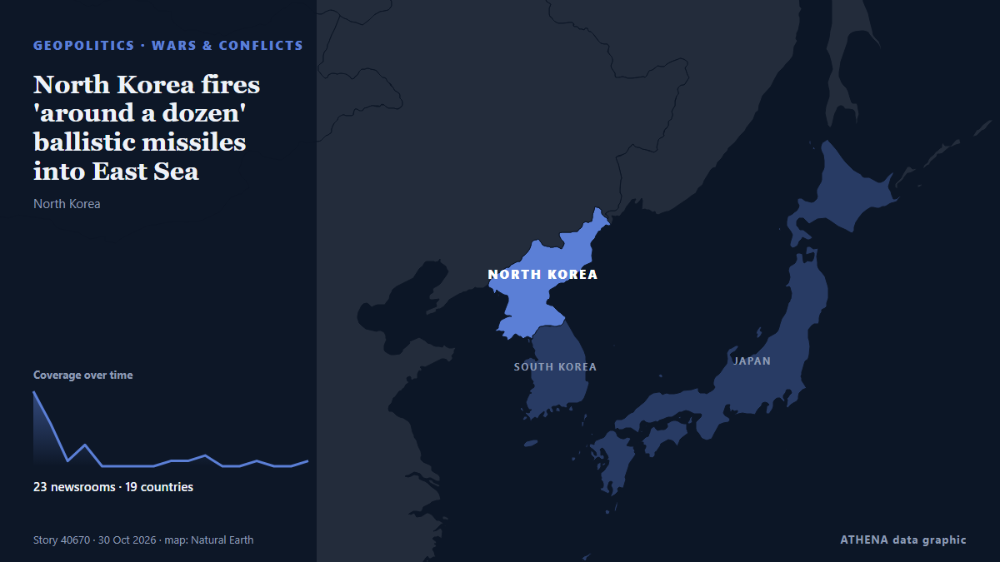

North Korea fires 'around a dozen' ballistic missiles into East Sea

North Korea launches around a dozen short-range ballistic missiles from Wonsan area of North Korea towards the Sea of Japan. из CNA (Channel NewsAsia)
Независимые источники: 23 издания в 19 странах, с 29 окт.; первым сообщил Mainichi (English); освещение идёт на спад. ATHENA оценивает риск как умеренный (2.9/10), прежде всего из-за тяжести описываемого ущерба и географического и отраслевого охвата. Уверенность — 87 % (высокая); подтверждают независимые источники: 23 издания, средняя надёжность источников — 76 %. СМИ по странам: Республика Корея (11), Сингапур (2), Франция (2). Освещение: с 29 окт. по 30 окт., 33 ч.
Почему это важно: События в сфере безопасности и дипломатии могут менять союзы, торговлю и рынки далеко за пределами непосредственно затронутых стран.
Что изменилось: 6 новых сообщений от 5 редакций за 24 часа до 30 окт..
Заголовки приводятся на английском языке, как они были опубликованы.
Коротко в цифрах
Отобрано, оценено и написано по опубликованной методологии ATHENA. Ни один редактор не вмешивается в отдельные события. Как это создаётся ›
| 29 Oct 03:56 UTC | 14 |
|---|---|
| 29 Oct 05:56 UTC | 8 |
| 29 Oct 07:56 UTC | 1 |
| 29 Oct 09:56 UTC | 4 |
| 29 Oct 11:56 UTC | 0 |
| 29 Oct 13:56 UTC | 0 |
| 29 Oct 15:56 UTC | 0 |
| 29 Oct 17:56 UTC | 0 |
| 29 Oct 19:56 UTC | 1 |
| 29 Oct 21:56 UTC | 1 |
| 29 Oct 23:56 UTC | 2 |
| 30 Oct 01:56 UTC | 0 |
| 30 Oct 03:56 UTC | 0 |
| 30 Oct 05:56 UTC | 1 |
| 30 Oct 07:56 UTC | 0 |
| 30 Oct 09:56 UTC | 0 |
| 30 Oct 11:56 UTC | 1 |
| 28 Oct 02:39 UTC | 0.0 |
|---|---|
| 29 Oct 05:09 UTC | 1.8 |
| 29 Oct 06:27 UTC | 2.2 |
| 29 Oct 07:47 UTC | 3.4 |
| 30 Oct 12:32 UTC | 2.9 |
Откуда эти цифры
Значимость
Риск
Уверенность
Освещение — кто сообщил и когда
заголовок в оригинале · открывает источник- Mainichi (English) · ЯпонияN. Korea fires around 10 short-range ballistic missiles: Seoul
- Times of India · ИндияSuspected ballistic missile launched from North Korea: Japan
- Free Malaysia Today · МалайзияNorth Korea fires projectile toward sea off east coast
- Korea Herald · Республика КореяN. Korea launches SRBMs toward East Sea
- The Korea Times · Республика КореяN. Korea fires unidentified projectile toward East Sea: JCS
- CNA (Channel NewsAsia) · СингапурNorth Korea fires 'around a dozen' ballistic missiles into East Sea
- The Korea Times · Республика КореяN. Korea fires around dozen short-range ballistic missiles toward East Sea: JCS
- DW English · ГерманияNorth Korea fires around 10 ballistic missiles into sea
- France 24 English · ФранцияNorth Korea fires 'around a dozen' ballistic missiles amid rising tensions with South Korea
- Arab News · Саудовская АравияNorth Korea fires around 10 ballistic missiles toward sea off east coast, Seoul says
- Korea Herald · Республика КореяN. Korea fires nearly dozen ballistic missiles after S. Korea's dialogue offer
- Business Recorder · ПакистанNorth Korea fires around 10 ballistic missiles toward sea off east coast, Seoul says
- Yonhap (English) · Республика Корея(2nd LD) N. Korea fires nearly dozen ballistic missiles after S. Korea's dialogue offer
- News of Bahrain · БахрейнNorth Korea Fires Unidentified Projectile Towards East Sea
- The Korea Times · Республика КореяCheong Wa Dae urges N. Korea to cease provocations following missile launch
- Türkiye Today · ТурцияNorth Korea fires dozen ballistic missiles as border tensions with South escalate
- ABC News (International) · Соединенные ШтатыNorth Korea fires missile barrage toward the sea as tensions with South rise
- Cyprus Mail · КипрNorth Korea fires around 10 ballistic missiles toward sea off east coast, Seoul says
- Asharq Al-Awsat (English) · Саудовская АравияNorth Korea Fires 'Around a Dozen' Ballistic Missiles into East Sea
- Yonhap (English) · Республика Корея(3rd LD) N. Korea fires nearly dozen ballistic missiles after S. Korea's dialogue offer
- Al Jazeera English · КатарNorth Korea fires missiles as row over landmine blast intensifies
- BusinessWorld · ФилиппиныNorth Korea fires around 10 ballistic missiles toward sea off east coast, Seoul says
- Daily Maverick · Южно-Африканская РеспубликаNorth Korea fires around 10 ballistic missiles toward sea off east coast, Seoul says
- Stuff · Новая ЗеландияNorth Korea fires missile barrage toward the sea as tensions with South rise
- Bangkok Post — page reader · ТаиландNorth Korea fires ballistic missiles into East Sea
- The Korea Times · Республика КореяDefense chief denounces N. Korea's missile launches at ASEAN defense forum
- The Daily Star — page reader · БангладешNorth Korea fires unknown projectile into East Sea: Seoul
- The Korea Times · Республика КореяN. Korea reports weapons demonstration featuring cruise missiles, rocket launchers, drones
- Korea Herald · Республика КореяNorth Korea displays drones, missiles as Kim Jong-un urges AI weapons push
- CNA (Channel NewsAsia) · СингапурNorth Korea displays drones, missiles as Kim urges AI weapons push
- The Korea Times · Республика КореяS. Korea, US, Japan discuss N. Korea's latest missile launches by phone
- Euronews English · ФранцияNorth Korea warns South Korea with ballistic missiles as Seoul calls for talks to ease border tensions